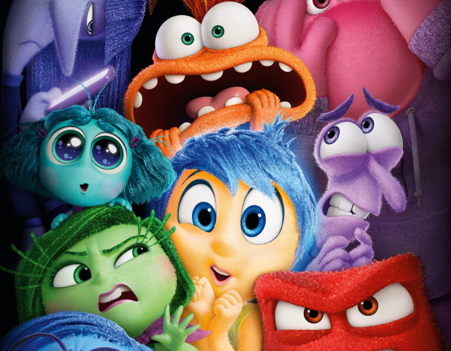

| Título do Filme |
Link |
Opinião |
Capa |
| Divertidamente 2 |
Assistir | ;
Filme retrata dirigido por Kelsey Mann, a obra retrata os dramas da adolescência de uma forma criativa e didática,
transformando as emoções em personagens e os processos psicológicos em ambientes dentro da mente da personagem
principal, a pequena Riley. |
 |
| Up altas aventuras |
Assistir |
Filme retrata conta a história de Carl e Ellie, que se conhecem ainda crianças. Os dois são bem diferentes, mas, mesmo
assim, conforme vão crescendo, se apaixonam e vivem um romance. A vida a dois é repleta de altos e baixos com relação a
finanças, sonhos e dificuldades emocionais |
 |
| Procurando nemo |
Assistir |
Filme retrata Procurando Nemo se passa no mundo subaquático da maior barreira de corais da Austrália. Quando Nemo, um
jovem peixe-palhaço, é inesperadamente levado para longe de casa, seu pai superprotetor, Marlin, e a adorável Dory, uma
peixinha com dificuldade de guardar memórias, decidem partir em seu resgate. |
 |
|
Assistir |
Filme retrata |
 |